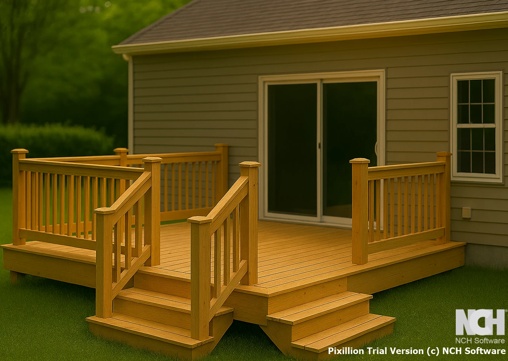

Terassi juuri sinulle
Terassi on yksi pihan tärkeimmistä tiloista — se jatkaa kodin sisätiloja ulos ja luo paikan oleskelulle, ruokailulle ja rauhoittumiselle. Rakennamme terassit omakotitaloihin, mökeille ja taloyhtiöihin, aina asiakkaan tarpeiden ja maaston mukaan.
Materiaalin valinta, koko, kaiteet ja perustukset suunnitellaan kohdekohtaisesti. Käymme paikalla ennen tarjouksen tekoa, jotta lopputulos vastaa juuri teidän pihaanne.
Mitä materiaaleja käytämme?
Valitsemme materiaalit aina projektin vaatimusten, asiakkaan toiveiden ja pohjoisen ilmaston mukaan.
Painekyllästetty puu
Edullinen ja kestävä perusvaihtoehto. Soveltuu hyvin rakenteisiin, kuten terassilaudoituksiin. Huoltoväli noin 3–5 vuotta.
Lämpöpuu
Lämpökäsitelty puu, joka kestää kosteutta ja vaatii vähemmän huoltoa. Kaunis harmaa patina ajan myötä. Erinomainen terasseille ja näkyviin rakenteisiin.
Komposiitti
Puun ja muovin yhdistelmä. Erittäin kestävä, ei vaadi maalaamista tai käsittelyä. Pitkä käyttöikä ja siisti ulkonäkö vuodesta toiseen.
Kiinnostuitko? Varaa kartoituskäynti.
Käymme pihallasi maksutta arvioimassa työn laajuuden ja toimitamme tarjouksen ilman sitoumuksia.
Varaa kartoituskäynti